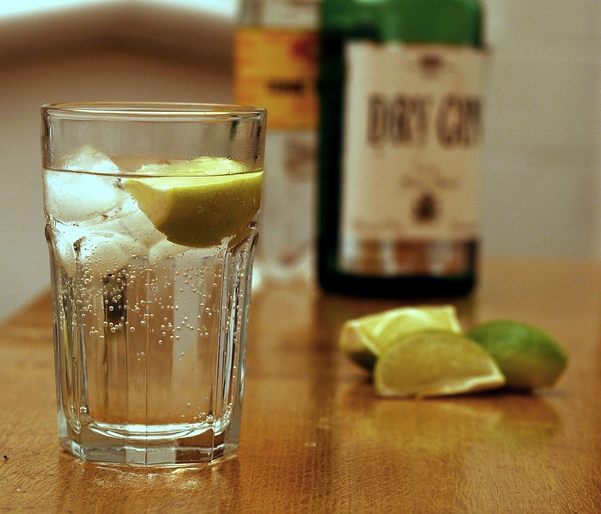
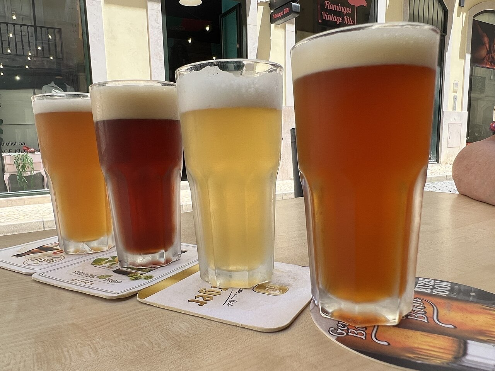

Fotografias ilustrativas — no site final usamos as vossas.
Escolha o copo certo para a conversa.
Rua de Santa Maria, em pleno Património Mundial.
Ligue ou escreva por WhatsApp e venha ter connosco.
O Bar Tásquilhado fica na Rua de Santa Maria, no centro histórico de Guimarães, Património Mundial. Uma boa seleção de bebidas para um copo no fim do passeio.


Fotografias ilustrativas — no site final usamos as vossas.
Pedido de reserva
Escolha o dia e a hora — o pedido chega por WhatsApp e confirmamos logo.
↑ Assim chegaria a mensagem ao vosso WhatsApp. (Nesta demonstração nada é enviado.)
Onde estamos
Proposta para Bar Tásquilhado
Esta página foi feita de propósito para Bar Tásquilhado por João Machado, programador web aqui de Guimarães. Inclui:
Eu trato do alojamento e da manutenção. Sem compromisso.